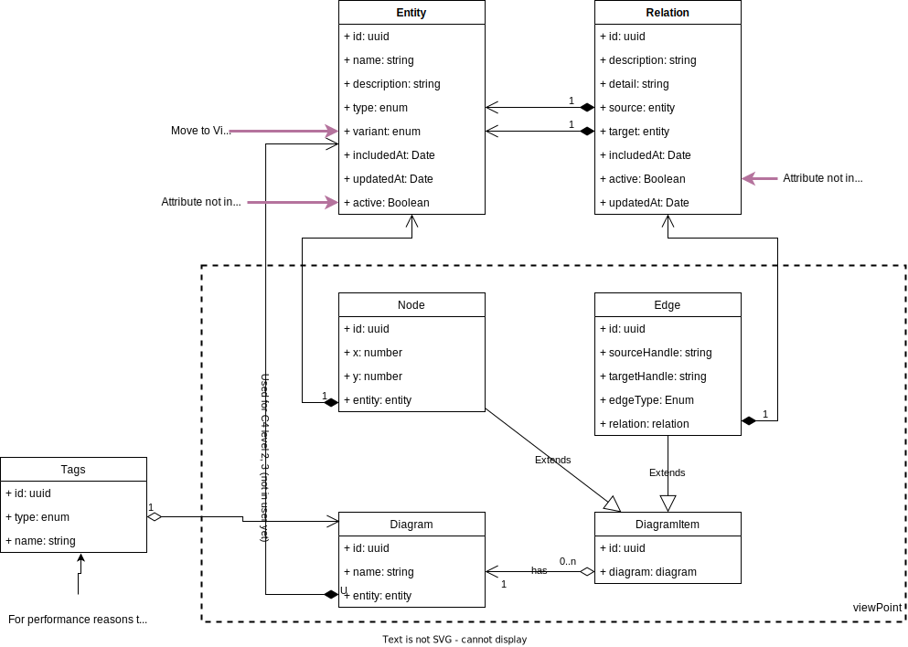

Metamodel
The image below show how our entities are related and connected.

Base Structure
- Entity: It represents some unique object of a specific type, such as:
Person, System - Relation: It represents how entities are connected
View Point
It represents visualization, normally understand as diagram, of part of the "base structure".
Changes made on the view point affects how the visualization are shown on the screen, but changes on the entity or the relation affects the entire system and other view points.
- Diagram: It represents a context of visualization
- Diagram Item: It is an abstraction to bring together Nodes and Edges
- Node: It represents the entity and its position on the diagram
- Edge: It represents the connections points between 2 nodes and is related to a relation
Here are some expected behaviors
- When you change a name or description of a Entity you affect all view points
- When you delete a connection, Edge, you affect only the view point you are in, the connection continue existing on the base structure
- When you delete a Entity, Node, you affect only the view point you are in, the entity continue to exists on the base Structure
- When you delete a Relation or a Entity from the entire system, it will remove every Node, Edge, Relation and Entity related to that id